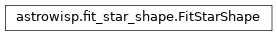

astrowisp package
Class Inheritance Diagram
AstroWISP python interface.
- class astrowisp.BackgroundExtractor(image, inner_radius, outer_radius, error_confidence=0.68)[source]
Bases:
objectMeasure the background level for each source in an image.
- image
The image being processed.
- inner_radius
The size of the aperture aronud each source within which pixels are excluded from background measurement.
- outer_radius
The outer rim of the aperture around each source within which unrejected pixels are included in the background measurement.
- error_confidence
The confidence level to use for estimating the background error.
- __call__(source_x, source_y)[source]
Measure the background under the sources with the given coordinates.
- Parameters:
source_x – The x coordinates of the sources within the image.
source_y – The y coordinates of the sources within the image.
- Returns:
- numpy.array:
The estimate of the background under each source in the same order as the input sources.
- numpy.array:
The estimate of the uncertainty in the background under each source in the same order as the input sources.
- numpy.array:
The number of pixels which were used to derive the background and its uncertainty.
- Return type:
- __del__()[source]
Destroy the image and extractor created in
__init__().
- class astrowisp.FitStarShape(*, mode, grid, initial_aperture, **other_configuration)[source]
Bases:
objectFit for the PSF/PRF of stars and their flux.
The PSF and PRF describe the distribution of light from a point source at infinity on the imaging device pixels.
PSF is the distribution of light produced by the optical system in the plane of the detector for a point source at infinity.
PRF is the response of a detector pixel at some offset from the center of the source. That is, the PRF is the PSF convolved with the sensitivity of detector pixels.
Both representations use a general piece-wise polynomial model in which the area around the source location is split into a rectangular, but in general irregular, grid of cells. Over each cell the PSF/PRF is modeled as a bi-cubic polynomial. The resulting function is constraned to have continuous values, first order derivatives and x-y cross-derivative across cell boundaries. Further, it’s value, first derivative and the x-y cross derivative are contsrainted to go to zero on the outside boundaries of the grid.
- _library_psf_fitter
The library object for carrying out PSF/PRF fitting.
- _library_configuration
Library configuration object set per the current
configuration
- _result_tree
The IOTree instance containing the last fittintg results, on None, if no fitting has been performed yet.
- configuration
The configuraiton for how to carry out PSF/PRF fitting. The following keys are used (others are ignored by this class):
- mode (str):
What kind of fitting to do ‘PSF’ or ‘PRF’ (case insensitive).
- grid (list of floats):
A comma separated list of grid boundaries. Can either be a single list, in which case it is used for both the horizontal and vertical boundaries. If different splitting is desired in the two directions, two lists should be supplied separated by
;. The first list should contain the vertical (x) boundaries and the second list gives the horizontal (y) ones. Sometimes it is desirable to treat the PSF as a uniform distribution of light over pixels. This is accomplished by setting a grid with just outer boundaries (e.g.-5,5) which automatically makes the PSF equal to zero everywhere, leaving only the background (i.e. flat light distribution). If such a grid is set, this also changes how stars excluded from shape fitting are treated. Normally, the fluxes of these stars are fit after the shape is determined using the “good” stars, but if zero PSF model is used, any sources excluded from the shape fit through the other configurations have their flux set to NaN to exclude them from further processing. If you want to keep all sources with zero PSF model, then make sure none are excluded from shape fitting.- initial_aperture (float):
This aperture is used to derive an initial guess for the amplitudes of sources when fitting for a piecewise bicubic PSF model by doing aperture photometry assuming a perfectly flat PSF.
- subpixmap (2D numpy array):
The sub-pixel map, for PSF fitting only.
- smoothing (float):
How much smoothing penalty to impose when fitting the PSF.
Nonefor no smoothing. Value can be both positive and negative and will always result in smoothing (less for negative values).- max_chi2 (float):
The value of the reduced chi squared above which sources are excluded from the fit. This can indicate non-point sources or sources for which the location is wrong among ohter things.
- pixel_rejection_threshold (float):
A number defining individual pixels to exclude from the PSF fit. Pixels with fitting residuals (normalized by the standard deviation) bigger than this value are excluded. If zero, no pixels are rejected.
- max_abs_amplitude_change (float):
The absolute root of sum squares tolerance of the source amplitude changes in order to declare the piecewise bicubic PSF fitting converged.
- max_rel_amplitude_change (float):
The relative root of sum squares tolerance of the source amplitude changes in order to declare the piecewise bicubic PSF fitting converged.
- min_convergence_rate (float):
If the rate of convergence falls below this threshold, iterations are stopped. The rate is calculated as the fractional decrease in the difference between the amplitude change and the value when it would stop, as determined by the
max_abs_amplitude_changeandmax_rel_amplitude_changeattributes.- max_iterations (int):
No more than this number if iterations will be performed. If convergence is not achieved before then, the latest estimates are output and an exception is thrown. A negative value allows infinite iterations. A value of zero, along with an initial guess for the PSF causes only the amplitudes to be fit for PSF fitting photometry with a known PSF. It is an error to pass a value of zero for this option and not specify and initial guess for the PSF.
- gain (float):
The gain in electrons per ADU to assume for the input images.
- cover_grid (bool):
If this option is true, all pixels that at least partially overlap with the grid are assigned to the corresponding source. This option is ignored for sdk PSF models.
- src_min_signal_to_noise (float):
How far above the background (in units of RMS) should pixels be to still be considered part of a source. Ignored if the piecewise bibucic PSF grid is used to select source pixels (cover-bicubic-grid option).
- src_max_aperture (float):
If this option has a positive value, pixels are assigned to sources in circular apertures (the smallest such that all pixels that pass the signal to noise cut are still assigned to the source). If an aperture larger than this value is required, an exception is thrown.
- src_max_sat_frac (float):
If more than this fraction of the pixels assigned to a source are saturated, the source is excluded from the fit.
- src_min_pix (int):
The minimum number of pixels that must be assigned to a source in order to include the source is the PSF fit.
- src_max_pix (int):
The maximum number of pixels that car be assigned to a source before excluding the source from the PSF fit.
- src_max_count (int):
The maximum number of sources to include in the fit for the PSF shape. The rest of the sources get their amplitudes fit and are used to determine the overlaps. Sources are ranked according to the sum of (background excess)^2/(pixel variance+background variance) of their individual non-saturated pixels.
- bg_min_pix (int):
The minimum number of pixels a background estimate must be based on in order to include the source in shape fitting.
- magnitude_1adu (float):
The magnitude that corresponds to a flux of 1ADU.
- Type:
Example
Create and configure a PRF fitting object, allowing up to third order dependence on image position, on a grid which splits the area around the source in 16 squares of 2pix by 2pix size each and using an aperture with 5 pixel radius for the initial estimate of source amplitudes:
>>> from astrowisp import FitStarShape >>> fitprf = FitStarShape(mode='prf', >>> grid=[-4.0, -2.0, 0.0, 2.0, 4.0], >>> initial_aperture=5.0)
- __del__()[source]
Destroy the configuration object created in
__init__().
- __init__(*, mode, grid, initial_aperture, **other_configuration)[source]
Set-up an object ready to perform PSF/PRF fitting.
- Parameters:
by (All the configuration attributes of the class can be configured)
arguments. (passing them as keyword)
- Returns:
None
- static _format_config(param_value)[source]
Format config param for passing to AstroWISP PSF fitting lib.
- configure(**configuration)[source]
Modify the currently defined configuration.
- Parameters:
**configuration – See
configuration.- Returns:
None
- fit(image_sources, backgrounds, require_convergence=True)[source]
Fit for the shape of the sources in a collection of imeges.
- Parameters:
image_sources ([5-tuples]) –
Each entry consists of:
The pixel values of the calibratred image
The error estimates of the pixel values
Mask flags of the pixel values.
Sources to process, defining at least the following quantities in a dictionary:
ID (string): some unique identifier for the source
x (float): The x coordinate of the source center in pixels
y (float): See
x
May also define enabled to flag only some sources for inclusion in the shape fit.
The source list can be either a numyy record array with field names as keys or a dictionary with field names as keys and 1-D numpy arrays of identical lengths as values.
List of the terms on which PSF parameters are allowed to depend on.
backgrounds ([BackgroundExtractor]) – The measured backgrounds under the sources.
require_convergence (bool) – If set to False, even non-converged fits are saved. If True, an exception is raised.
- Returns:
A SubPixPhot IO tree containing all the newly derived results.
- Return type:
- class astrowisp.PiecewiseBicubicPSF(library_psf)[source]
Bases:
PSFBaseImplement the PSFBase methods for libary PSFs.
- __call__(x, y)[source]
Return the value(s) of the PSF at the given point(s).
- Parameters:
- Returns:
The value(s) of the PSF at (x, y) relative to the source center.
- Return type:
numpy array
- integrate(*, center_x, center_y, width, height, circle_radius=None)[source]
Return integrals of the PSF over circle-rectangle overlaps.
- Parameters:
center_x (float or array) – The x coordinate(s) of the center(s) of the rectangle(s) to integrate over.
center_y (float or array) – The y coordinate(s) of the center(s) of the rectangle(s) to integrate over.
width (float or array) – The width(s) of the rectangle(s).
height (float or array) – The height(s) of the rectangle(s).
circle_radius (float or array) – The rad(ii/us) of the circle(s). For zero entries or None, the integral is over the full rectangle(s).
- Returns:
The integral of the PSF over the specified area(s).
- Return type:
float or array
- class astrowisp.PiecewiseBicubicPSFMap(star_shape_map_tree)[source]
Bases:
objectProvide convenient python interface to shape fitting results.
- class astrowisp.SubPixPhot(**configuration)[source]
Bases:
objectUse sub-pixel aware aperture photomotre to measure fluxes of sources.
- _library_configuration
The library configuration object to use the next aperture photometry measurement.
- Type:
_c_subpixphot_configuration
- _result_tree
The IOTree instance containing PSF fitting and aperture photometry information from the last aperture photomtry measurement, or None if no photometry has been done yet.
- Type:
_c_h5io_data_tree_p
- _library_subpix_map
The library object representing the currently set sub-pixel map.
- Type:
_c_core_sub_pixel_map_p
- configuration
The congfiguration for how to perform the next aperture photometry. The following keys are used (others are ignored by this class).
- subpixmap (2D numpy array):
The sub-pixel map to assume.
- apertures ([float, …]):
A list of the apertures to use.
- gain (float):
The gain to assume for the input image.
- magnitude_1adu (float):
The magnitude that corresponds to a flux of 1ADU.
- const_error (float):
A constant that gets added to all error estimates.
- Type:
- image
The last image for which aperture photometry was extracted. Contains the following entries:
- values:
The calibrated pixel values.
- errors:
Error estimates for the entries in values.
- mask:
Bitmask flags indicating any known problems with image pixels.
- Type:
- __call__(image, fitpsf_io_tree, image_index=0)[source]
Measure the fluxes of all sources in an image using aperture photometry.
- Parameters:
image (2-D numpy.array, 2-D numpy.array, 2-D numpy.array) –
entries:
The calibrated values of the pixels in the image.
Error estimates of the pixel values
Bitmask flagging any known issues with image pixels (e.g. saturation, hot pixels, etc.).
fitsf_io_tree (IOTree) – The result tree returned by fit_star_shape.fit(). On output, this variable also contains the newly derived aperture photometry measurements.
image_index (int) – The image index within the result tree corresponding to the input image. This is the index of the image within the list of images passed to
fit_star_shape.
- Returns:
None. However, the
fitpsf_io_treeargument is updated to include the newly measured fluxes.
- __init__(**configuration)[source]
Prepare an object for measuring fluxes using aperture photometry.
- Parameters:
**configuration – See
configuration.- Returns:
None
- static _format_config(param_value)[source]
Format config param for passing to AstroWISP aperture photometry func.
- Parameters:
param_value (pair of values) – One of the recognized keys from
configurationand the value it should be set to.- Returns:
The name of the option corresponding to the configuration parameter being set.
an ascii string representing the value in the format expected by the configuration file parser of the subpixphot tool.
- Return type:
- configure(**configuration)[source]
Modify the currently defined configuration.
- Parameters:
**configuration – See
configuration.- Returns:
None
Subpackages
- astrowisp.fake_image package
- astrowisp.tests package
- astrowisp.utils package
flux_from_magnitude()- Submodules
- astrowisp.utils.explore_prf module
- Class Inheritance Diagram
AlglibSplineextract_pixel_data()find_pixel_offsets()fit_spline()get_image_slices()get_plot_tasks()get_prf_data()get_source_info()get_source_positions()get_trans_fname()list_plot_filenames()main()pad_prf_data()parse_command_line()plot_3d_prf()plot_entire_prf()plot_prf_slice()show_plots()
- astrowisp.utils.file_utilities module
- astrowisp.utils.explore_prf module
Submodules
- astrowisp.background module
- astrowisp.fit_star_shape module
- astrowisp.hat_masks module
- astrowisp.io_tree module
- astrowisp.libastrowisp module
- astrowisp.piecewise_bicubic_psf module
- astrowisp.piecewise_bicubic_psf_map module
- astrowisp.psf_base module
- astrowisp.subpixphot module